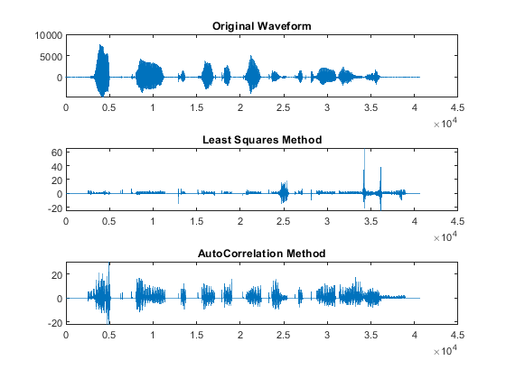
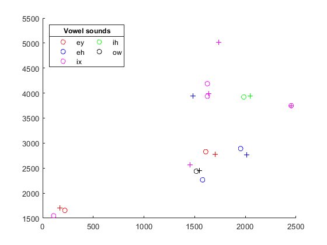

Contents
- Skylar Tamke, Homework 1 -Least squares method
- Impulse Train generation
- least squares method begin
- Create a vector of overlapping windows
- Create excitation windows based on impulse train
- Coefficient generation - Least Squares method.
- stablize the coefficients for the filter least squares
- Generating synthesized sample based on the coefficents
- Combining the overlapped windows - least squares
- power scaling to the waveform least squares
- autocorrelation method
- generating the correpsonding input vector for autocorrelation.
- generating the coefficients - autocorrelation
- stablize the coefficients for the filter autocorrelation
- pitch synchronus method, pole zero method
- plotting section for outputs from methods
- formant plotting
- Conclusion
- Ouput
Skylar Tamke, Homework 1 -Least squares method
clc clear %file that says 'Artificial intelligence is for real.' filename = 'SX29.WAV'; phntable = readtable("SX29phoneam.txt"); %code provided on handout by Snider fid = fopen(filename,'r'); status = fseek(fid, 1024, -1); [wave,count] = fread(fid,inf,'int16'); fclose(fid); Fs = 16000; %to change the wave length into a nice number to divide into count = length(wave)-3 numWindows = 250; windowSize = 320; %as of Ross's recommendation this only needs to be around 16 coefCount = 16; %how many coef per section, will probably go up for end result Clength = windowSize; tempcoefCount = coefCount; windows = zeros(numWindows,windowSize); h = zeros(numWindows,(Clength-coefCount),coefCount); b = []; %if the number of coefficients change this does too, so b and h have equal m vs n lengths atotal_ls = zeros(numWindows,coefCount); exwindow = zeros(numWindows,windowSize);
count =
40650
Impulse Train generation
This is where the phoneams are looked at and a hand crafted impulse train is created based on the phooneams at each part. There are 36 total phoneams for this speech signal. Since we have three types of excitations the range of excitation will be limited.
impulseTrain = zeros(count,1); impulseEnergy = 5; %used anytime a impulse is needed (impulse/impulseperiodic) impulsePeriod = 65; % %%%%%%%%%%%%%%%%%%%%%%%%%%%%%%%%%%%%%%%%%%%%%%%%%%%%%%%%%%%%%%%%%%%%%%%%%%%%%%%%%%%%%%%%%%%%%%%%%%%%%% %stops % 5053,6310,'pcl'; stop % 6310,6480,'p'; stop % 6480,7520,'gcl'; stop % 7520,8050,'g'; stop % 11320,12870,'gcl'; stop % 12870,13230,'t'; stop % 13720,15140,'pcl'; stop % 15140,15620,'p'; stop % 17080,17900,'kcl'; stop % 17900,18140,'k'; stop % 19000,20320,'pcl'; stop % 20320,20690,'p'; stop % 22440,23290,'kcl'; stop % 23290,23630,'k'; stop % 25400,26300,'pcl'; stop % 26300,26690,'p'; stop % 27160,28140,'tcl'; stop % 28140,28757,'t'; stop % 30880,31360,'dx'; stop %impulseTrain(5053) = impulseEnergy; impulseTrain(6310) = impulseEnergy; impulseTrain(6480) = impulseEnergy; impulseTrain(7520) = impulseEnergy; impulseTrain(11320) = impulseEnergy; impulseTrain(12870) = impulseEnergy; %impulseTrain(13720) = impulseEnergy; impulseTrain(15140) = impulseEnergy; %impulseTrain(17080) = impulseEnergy; impulseTrain(17900) = impulseEnergy; %impulseTrain(19000) = impulseEnergy; impulseTrain(20320) = impulseEnergy; %impulseTrain(22440) = impulseEnergy; impulseTrain(23290) = impulseEnergy; %impulseTrain(25400) = impulseEnergy; impulseTrain(26300) = impulseEnergy; %impulseTrain(27160) = impulseEnergy; impulseTrain(28140) = impulseEnergy; impulseTrain(30880) = impulseEnergy; %%%%%%%%%%%%%%%%%%%%%%%%%%%%%%%%%%%%%%%%%%%%%%%%%%%%%%%%%%%%%%%%%%%%%%%%%%%%%%%%%%%%%%%%%%%%%%%%%%%%%% %glides % 2520,3310,'hh' glide % 4493,5053,'l' glide % 8050,9140,'r'; glide impulseTrain(2530:impulsePeriod:3310) = impulseEnergy; impulseTrain(4493:impulsePeriod:5053) = impulseEnergy; impulseTrain(8050:impulsePeriod:9140) = impulseEnergy; %%%%%%%%%%%%%%%%%%%%%%%%%%%%%%%%%%%%%%%%%%%%%%%%%%%%%%%%%%%%%%%%%%%%%%%%%%%%%%%%%%%%%%%%%%%%%%%%%%%%%% %vowels % 3310,4493,'eh' vowel % 9140,11320,'ey'; vowel % 13230,13720,'ix'; vowel % 15620,17080,'ih'; vowel % 18140,19000,'ix'; vowel % 20690,22440,'eh'; vowel % 23630,24320,'ix'; vowel % 26690,27160,'ix'; vowel % 28757,30880,'ey'; vowel % 31360,34270,'ow'; vowel impulseTrain(3310:impulsePeriod:4493) = impulseEnergy; impulseTrain(9140:impulsePeriod:11320) = impulseEnergy; impulseTrain(13230:impulsePeriod:13720) = impulseEnergy; impulseTrain(15620:impulsePeriod:17080) = impulseEnergy; impulseTrain(18140:impulsePeriod:19000) = impulseEnergy; impulseTrain(20690:impulsePeriod:22440) = impulseEnergy; impulseTrain(23630:impulsePeriod:24320) = impulseEnergy; impulseTrain(26690:impulsePeriod:27160) = impulseEnergy; impulseTrain(28757:impulsePeriod:30880) = impulseEnergy; impulseTrain(31360:impulsePeriod:34270) = impulseEnergy; %fricatives %from what I saw in the timit file these are white noise % 24320,25400,'v'; fricative % 34270,36180,'z'; fricative fric1 = wgn((1081),1,0); fric2 = wgn((1911),1,0); impulseTrain(24320:25400) = fric1; impulseTrain(34270:36180) = fric2; % not sure where to use, beginning and end characters % % 0,2520,'h#' beginning marker % 36180,40560,'h#'} end impulseTrain(36180:impulsePeriod:39000) = impulseEnergy/3;
least squares method begin
The first method of the three required for this assignment. Thsi method looks at the previous values to predict the future values.
windows(1,:) = wave(1:windowSize); %overlapping windows for each section windowOverlap = (windowSize/2); %floor to keep safe,
Create a vector of overlapping windows
This part is important since if this is done improperly the output will sound choppy. If the windows are not overlapped the output will only show the changes between the phoneams, which is where the choppyness comes from. When the windows are overlapped and combined correctly later the windows will blend the changes together keeping some of the choppyness out.
for i = 1:numWindows if i-1 == 0 windows(i,:) = wave(1:windowSize); else windows(i,:) = wave(((i-1)*windowOverlap+1):(((i-1)*windowOverlap)+windowSize)); end end
Create excitation windows based on impulse train
These windows come from the impulse train generated earlier based on the placement of the phoneams in the speech sample. This is just creating corresponding windows that match up with the windows from the speech sample that are used to create coefficients.
for i = 1:numWindows if i == 1 exwindow(i,:) = impulseTrain(1:windowSize); else exwindow(i,:) = impulseTrain(((i-1)*windowOverlap+1):(((i-1)*windowOverlap)+windowSize)); end end % creating h vector for least squares, these are looking at past values to % predict future values for i = 1:numWindows tempCoefCount = coefCount; for j = 1:tempCoefCount h(i,:,j) = (windows(i,tempCoefCount:(windowSize)-j)); tempCoefCount = tempCoefCount - 1; end end % create a table of b for the h for i = 1:numWindows b(:,i) = windows(i,coefCount+1:windowSize); end
Coefficient generation - Least Squares method.
creating vectors of coefficients that correlate to the windows that they come from. will use these in the filter function below to get a synthesized wave out.
for i = 1:numWindows tempArray = squeeze(h(i,:,:)); transposedTemp = tempArray'; atotal_ls(i,:) = (transposedTemp * tempArray) \ (transposedTemp * b(:,i)); end %
stablize the coefficients for the filter least squares
The polystab function has a few steps 1. find the roots 2. see if roots are stable, if so move the roots to the inside of the unit circle 3. generate the polynomial function based on corrected roots
for i = 1:numWindows outputCoef_ls(i, :) = [1 polystab(atotal_ls(i,:))]; % turns out this function does it all, from beginning to end end %
Generating synthesized sample based on the coefficents
The coefficients are put into the filter as the poles and hit with the excitation windows, which are the segmented impulse train. The result is used to create the synthesized wave later on.
for i = 1:numWindows tempCoef = outputCoef_ls(i,2:coefCount+1); convTable_ls(i,:) = filter(1, tempCoef ,exwindow(i,:)); end %
Combining the overlapped windows - least squares
Each of the windows need to be weighted before combining into a single row vector which is the output waveform without any power scaling based on the input. A hamming window was chosen to weight the window during the combination process, since in a hamming windows the leading and lagging edge are worth less than the center of the wave.
winWeightSize = windowSize; windowWeight = window(@hamming,windowSize); output_ls = zeros(count,1); for i = 1:numWindows if i == 1 output_ls(1:length(convTable_ls(i,:))) = convTable_ls(i,:)' .* windowWeight; else start = (i-1)*windowOverlap; stop = start + windowSize-1; initial = output_ls(start:stop) .* windowWeight; convolution = convTable_ls(i,:)' .* windowWeight; out = initial + convolution; output_ls(start:stop) = out; end end % %%%%%%%%%%%%%%%%%%%%%%%%%%%%%%%%%%%%%%%%%%%%%%%%%%%%%%%%%%%%%%%%%%%%%%%%%%%
power scaling to the waveform least squares
The output needs to be scaled based on the power of the phoneams. This section might not work as well as it should, but the idea is that I look at the energy of the phoneams and have the output scaled based on that, emphasizing the placement of the phoneams in the output.
phon_index = [1 2520 3310 4493 5053 6310 6480 7520 8050 9140 11320 12870 13230 13720 15140 15620 17080 17900 18140 19000 20320 20690 22440 23290 23630 24320 25400 26300 26690 27160 28140 28757 30880 31360 34270 36180]; scaledoutput = []; %this section needs work for i = 1:length(phon_index)-1 %get fft of window infft = fft(wave(phon_index(i):phon_index(i+1))); outfft = fft(output_ls(phon_index(i):phon_index(i+1))); %get average power for window inpower = infft .* conj(infft); outpower = outfft .* (conj(outfft)); totalinpower = sum(inpower); totaloutpower = sum(outpower); %ratio fo power1 ratiopower(i) = totalinpower / totaloutpower; if isnan(ratiopower(i)) || isinf(ratiopower(i)) || ratiopower(i) < 0.3 output_ls(phon_index(i):phon_index(i+1)) = output_ls(phon_index(i):phon_index(i+1)); elseif ratiopower(i) > 100 output_ls((i*160):((i+1)*160)) = output_ls((i*160):((i+1)*160))*.7; else output_ls(phon_index(i):phon_index(i+1)) = output_ls(phon_index(i):phon_index(i+1)) .* ratiopower(i) .* window(@hamming,length(output_ls(phon_index(i):phon_index(i+1)))); end end % end of least squares method
autocorrelation method
Most of the process was worked on during the least squares method, so this part of the assignment was mostly copy and paste after generating the coefficients for the autocorrelation method.
generating the correpsonding input vector for autocorrelation.
This based on the lecture notes for this section, this method turned out to be simpler than the least squares method.
for i = 1:numWindows for tau=0:coefCount % grab the speech sample windows for the convolution sum sn = windows(i,1:windowSize - tau); sn_lag = windows(i,tau+1:windowSize); % compute the autocorrelation for lag tau rn_table(i,tau+1) = sum(sn.*sn_lag); end RN_table(i,:,:) = toeplitz(rn_table(i, 1:coefCount)); end
generating the coefficients - autocorrelation
adding the minus sign to this didn't really matter
for i = 1:numWindows current_RN = squeeze(RN_table(i,:,:)); atotal_ac(i,:) = -current_RN\(rn_table(i, 2:coefCount+1))'; end %
stablize the coefficients for the filter autocorrelation
autocorrelation should have some form of stablization based on it was generated
for i = 1:numWindows outputCoef_ac(i, :) = [1 polystab(atotal_ac(i,:))]; % turns out this function does it all, from beginning to end end % putting coefficients through filter with impulse for excitation, recording resulting output to convTable to be overlapped + added later for i = 1:numWindows tempCoef = outputCoef_ac(i,1:coefCount+1); convTable_ac(i,:) = filter(1, tempCoef ,exwindow(i,:)); end % combining the windows to get a single vector as the output % since the windows are overlapped we have to extract the parts of the % window that we actually want, this includes making sure that the % important part of the window (middle) weighs the most and the edges are % scaled down for the overlap and add process output_ac = zeros(count,1); for i = 1:numWindows if i == 1 output_ac(1:length(convTable_ac(i,:))) = convTable_ac(i,:)' .* windowWeight; else start = (i-1)*windowOverlap; stop = start + windowSize-1; initial = output_ac(start:stop) .* windowWeight; convolution = convTable_ac(i,:)' .* windowWeight; out = initial + convolution; output_ac(start:stop) = out; end end % no power scaling needed for this method? It seems to work fine as is % before attempting an autoscale. %%%%%%%%%%%%%%%%%%%%%%%%%%%%%%%%%%%%%%%%%%%%%%%%%%%%%%%%%%%%%%%%%%%%%%%%%%%
pitch synchronus method, pole zero method
So far no one really knows how to do this part here. The concept from what I read from the chapter is that your sample per window is shortened so that you only have poles in your sample and then you create your zeros based on that.
%%%%%%%%%%%%%%%%%%%%%%%%%%%%%%%%%%%%%%%%%%%%%%%%%%%%%%%%%%%%%%%%%%%%%%%%%%%
plotting section for outputs from methods
%%%%%%%%%%%%%%%%%%%%%%%%%%%%%%%%%%%%%%%%%%%%%%%%%%%%%%%%%%%%%%%%%%%%%%%%%%% % From top to bottom the plots are labeled to their corresponding waveform % to the waveforms played in this script. close figure(1) subplot(3,1,2) plot(output_ls) title("Least Squares Method") subplot(3,1,3) plot(output_ac) title("AutoCorrelation Method") subplot(3,1,1) plot(wave) title("Original Waveform");
formant plotting
This section is plotting the formants of the vowels in the speech sample in a scatterplot. Each of the plots are color coded to match the vowel that they represent.
%vowels % 3310,4493,'eh' vowel 1 % 9140,11320,'ey'; vowel 2 % 13230,13720,'ix'; vowel 3 % 15620,17080,'ih'; vowel 4 % 31360,34270,'ow'; vowel 5 % 20690,22440,'eh'; vowel 1 % 23630,24320,'ix'; vowel 3 % 26690,27160,'ix'; vowel 3 % 28757,30880,'ey'; vowel 2 % 18140,19000,'ix'; vowel 3 % creating a vector for scatter plotting the formants later vowel = [1 2 3 4 5 1 3 3 2 3] %setting up vectors for easy format grabs for least squares coef_vowel_ls(1,:) = atotal_ls(round(3310/160),:); coef_vowel_ls(2,:) = atotal_ls(round(9140/160),:); coef_vowel_ls(3,:) = atotal_ls(round(13230/160),:); coef_vowel_ls(4,:) = atotal_ls(round(15620/160),:); coef_vowel_ls(5,:) = atotal_ls(round(31360/160),:); coef_vowel_ls(6,:) = atotal_ls(round(20690/160),:); coef_vowel_ls(7,:) = atotal_ls(round(23630/160),:); coef_vowel_ls(8,:) = atotal_ls(round(26690/160),:); coef_vowel_ls(9,:) = atotal_ls(round(28757/160),:); coef_vowel_ls(10,:) = atotal_ls(round(18140/160),:); % a simple for loop that converts the output of freqz to hz so we can grab % the frequencies that the formants sit at. for i = 1:10 [h,f] = freqz(1,coef_vowel_ls(i,:),512,Fs); hz = 20*log10(abs(h)); [pks,indc] = findpeaks(hz,f); formant1_ls(i) = round(indc(1)); formant2_ls(i) = round(indc(2)); end %setting up vectors for easy format grabs for autocorrelation coef_vowel_ac(1,:) = atotal_ac(round(3310/160),:); coef_vowel_ac(2,:) = atotal_ac(round(9140/160),:); coef_vowel_ac(3,:) = atotal_ac(round(13230/160),:); coef_vowel_ac(4,:) = atotal_ac(round(15620/160),:); coef_vowel_ac(5,:) = atotal_ac(round(31360/160),:); coef_vowel_ac(6,:) = atotal_ac(round(20690/160),:); coef_vowel_ac(7,:) = atotal_ac(round(23630/160),:); coef_vowel_ac(8,:) = atotal_ac(round(26690/160),:); coef_vowel_ac(9,:) = atotal_ac(round(28757/160),:); coef_vowel_ac(10,:) = atotal_ac(round(18140/160),:); for i = 1:10 [h,f] = freqz(1,coef_vowel_ac(i,:),512,Fs); hz = 20*log10(abs(h)); [pks,indc] = findpeaks(hz,f); formant1_ac(i) = round(indc(1)); formant2_ac(i) = round(indc(2)); end % plotting section figure(2) hold on % % first the vowels from the least squares method sent to the scatter plot % and color coded to the vowels for i = 1:10 switch vowel(i) case 1 scatter(formant1_ls(i),formant2_ls(i),'r'); case 2 scatter(formant1_ls(i),formant2_ls(i),'b'); case 3 scatter(formant1_ls(i),formant2_ls(i),'m'); case 4 scatter(formant1_ls(i),formant2_ls(i),'g'); case 5 scatter(formant1_ls(i),formant2_ls(i),'k'); end end % % second the volwels from the autocorrelation method to be color coded as % well. for i = 1:10 switch vowel(i) case 1 scatter(formant1_ac(i),formant2_ac(i),'r','+'); case 2 scatter(formant1_ac(i),formant2_ac(i),'b','+'); case 3 scatter(formant1_ac(i),formant2_ac(i),'m','+'); case 4 scatter(formant1_ac(i),formant2_ac(i),'g','+'); case 5 scatter(formant1_ac(i),formant2_ac(i),'k','+'); end end % just adding a legend to show which colors correspond to the vowels they % are plotting lgn = legend({'ey', 'eh', 'ix', 'ih', 'ow'}); lgn.NumColumns = 2; lgn.Location = 'northwest'; lgn.Title.String = "Vowel sounds";
vowel =
1 2 3 4 5 1 3 3 2 3
 Conclusion
To conclude, the autocorrelation method is much better than the least squares method. With the least squares method the coefficients turn out to be unstable more often than not, but with autocorrelation, the coefficients are stable in most cases and needed little work to be able to get a compehendable output. I'm assuming that the zero-pole method would be comparable to the autocorrelation method since there are zeros to balance out the poles.
Ouput
The sound files that are included in the dropbox are created in this section. When this script is played it will play the least squares method, then the autocorrelation method, and lastly the original speech sample.
%the least squares synthesized speech sample sound(output_ls,16000); pause(4) %the autocorrelation synthesized speech sample sound(output_ac,16000); % the original speech sample pause(4) soundsc(wave,16000); fileout1 = 'output_leastsquares.wav'; fileout2 = 'output_autocorrelation.wav'; audiowrite(fileout1,output_ls, Fs); audiowrite(fileout2,output_ac, Fs);
Warning: Data clipped when writing file. Warning: Data clipped when writing file.